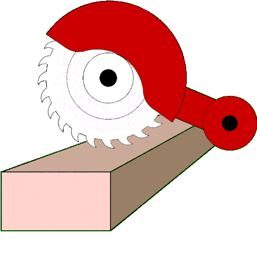

When in the workshop, there are many different moving tools, mostly saws, drills, and sanders. When people are working in the workshop, they are doing their work and they are using the tools the way they should be used. But when there are people who don't use the tools correctly people get hurt, when people get hurt they are sent to the health office to take care of the ingury, we can avoid that completely if people just use they equitment right.
People who get hurt in the workshop will most likely get asked what happened, you are then expected to answer. Wheather it is a scratch or a missing finger, people must use the workshop correctly and safely.
 ©